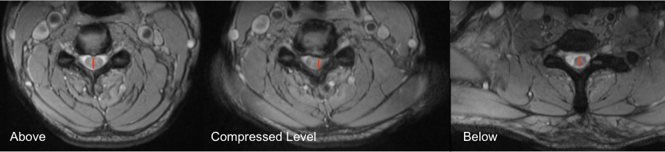

Adapted from: Bickle I, Cervical disc extrusion. Case study, Radiopaedia.org (Accessed on 19 Dec 2025) https://doi.org/10.53347/rID-53950
1) Description of Measurement
Maximum Spinal Cord Compression (MSCC) is a quantitative MRI-based metric that expresses the percentage reduction in spinal cord diameter at the site of maximal compression relative to the patient’s own normal cord diameter.
By normalizing the compressed diameter to the average of adjacent, non-compressed segments, MSCC accounts for inter-patient variability in cord size and provides a robust, patient-specific estimate of compression severity. MSCC is widely used in the evaluation of degenerative cervical myelopathy, disc–osteophyte complexes, OPLL, trauma, and other compressive myelopathies, and correlates with neurologic deficit severity and outcomes.
2) Instructions to Measure
MSCC Equation:
3) Normal vs. Pathologic Ranges
Key points:
4) Important References
Fehlings MG, Rao SC, Tator CH, et al. The optimal radiologic method for assessing spinal canal compromise and cord compression in patients with cervical spinal cord injury. Part II: Results of a multicenter study. Spine (Phila Pa 1976). 1999 Mar 15;24(6):605-13. doi: 10.1097/00007632-199903150-00023.
Takao T, Morishita Y, Okada S, et al. Clinical relationship between cervical spinal canal stenosis and traumatic cervical spinal cord injury without major fracture or dislocation. Eur Spine J. 2013 Oct;22(10):2228-31. doi: 10.1007/s00586-013-2865-7. Epub 2013 Jun 23.
Kitagawa T, Fujiwara A, Kobayashi N, et al. Morphologic changes in the cervical neural foramen due to flexion and extension: in vivo imaging study. Spine (Phila Pa 1976). 2004 Dec 15;29(24):2821-5. doi: 10.1097/01.brs.0000147741.11273.1c.
Fehlings MG. Current Knowledge in Degenerative Cervical Myelopathy. Neurosurg Clin N Am. 2018 Jan;29(1):xiii-xiv. doi: 10.1016/j.nec.2017.09.021. Epub 2017 Oct 23.
5) Other info....
MSCC is a normalized metric, reducing bias from patient size or absolute cord dimensions
Particularly useful for:
Should be interpreted alongside:
High MSCC without T2 hyperintensity may still represent reversible compression, whereas chronic compression with signal change suggests irreversible injury
Static MRI does not assess dynamic compression; instability may require flexion–extension radiographs